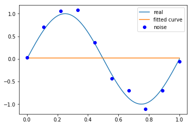
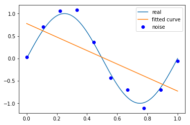
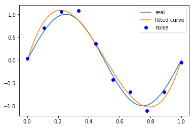
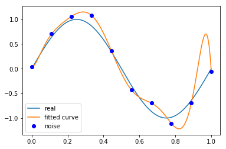
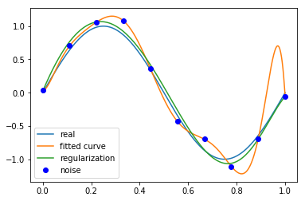

第1章 统计学习方法概论
第1章 统计学习方法概论
使用最小二乘法拟和曲线
高斯于1823年在误差\(e_1,…,e_n\)独立同分布的假定下,证明了最小二乘方法的一个最优性质: 在所有无偏的线性估计类中,最小二乘方法是其中方差最小的。 对于数据\((x_i, y_i) (i=1, 2, 3...,m)\)
拟合出函数\(h(x)\)
有误差，即残差：\(r_i=h(x_i)-y_i\)
此时\(L2\)范数(残差平方和)最小时，\(h(x)\) 和 \(y\) 相似度最高，更拟合
一般的\(H(x)\)为\(n\)次的多项式： \[ H(x)=w_0+w_1x+w_2x^2+...w_nx^n \] \(w(w_0,w_1,w_2,...,w_n)\)为参数
最小二乘法就是要找到一组 \(w(w_0,w_1,w_2,...,w_n)\) ，使得\(\sum_{i=1}^n(h(x_i)-y_i)^2\) (残差平方和) 最小
即，求 \[ min\sum_{i=1}^n(h(x_i)-y_i)^2 \]
举例：用目标函数\(y=sin2{\pi}x\), 加上一个正态分布的噪音干扰，用多项式去拟合
import numpy as np |
- ps:
numpy.poly1d([1,2,3])生成 \(1x^2+2x^1+3x^0\)*
# 目标函数 |
# 十个点 |
M=0
# M=0 |
Output[ ]
Fitting Parameters: [0.02515259]
M=1
# M=1 |
Output[ ]
Fitting Parameters: [-1.50626624 0.77828571]
M=3
# M=3 |
Output[ ]
Fitting Parameters: [ 2.21147559e+01 -3.34560175e+01 1.13639167e+01 -2.82318048e-02]
M=9
# M=9 |
Output[ ]
Fitting Parameters: [-1.70872086e+04 7.01364939e+04 -1.18382087e+05 1.06032494e+05
-5.43222991e+04 1.60701108e+04 -2.65984526e+03 2.12318870e+02
-7.15931412e-02 3.53804263e-02]
当M=9时，多项式曲线通过了每个数据点，但是造成了过拟合
正则化
结果显示过拟合，
引入正则化项(regularizer)，降低过拟合
\[
Q(x)=\sum_{i=1}^n(h(x_i)-y_i)^2+\lambda||w||^2
\]
回归问题中，损失函数是平方损失，正则化可以是参数向量的L2范数,也可以是L1范数。
\(L1\): \(\|v\|_1=\sum_{n=1}^N\left|v_n\right|\)
\(L2\): \(\|v\|_2=\sqrt{\sum_{n=1}^N v_n^2}=\sqrt{v T v}\)
regularization = 0.0001 |
# 最小二乘法,加正则化项 |
plt.plot(x_points, real_func(x_points), label='real') |
Output[ ]
<matplotlib.legend.Legend at 0x295a5c757b8>
第1章统计学习方法概论-习题
习题1.1
说明伯努利模型的极大似然估计以及贝叶斯估计中的统计学习方法三要素。伯努利模型是定义在取值为0与1的随机变量上的概率分布。假设观测到伯努利模型\(n\)次独立的数据生成结果，其中\(k\)次的结果为1，这时可以用极大似然估计或贝叶斯估计来估计结果为1的概率。
解答：
伯努利模型的极大似然估计以及贝叶斯估计中的统计学习方法三要素如下：
1. 极大似然估计
模型： \(\mathcal{F}=\{f|f_p(x)=p^x(1-p)^{(1-x)}\}\)
策略： 最大化似然函数
算法： \(\displaystyle
\mathop{\arg\min}_{p} L(p)= \mathop{\arg\min}_{p}
\binom{n}{k}p^k(1-p)^{(n-k)}\) 2.
贝叶斯估计
模型： \(\mathcal{F}=\{f|f_p(x)=p^x(1-p)^{(1-x)}\}\)
策略： 求参数期望
算法： \[
\begin{aligned} E_\pi\big[p \big| y_1,\cdots,y_n\big]
& = {\int_0^1}p\pi (p|y_1,\cdots,y_n) dp \\
& = {\int_0^1}
p\frac{f_D(y_1,\cdots,y_n|p)\pi(p)}{\int_{\Omega}f_D(y_1,\cdots,y_n|p)\pi(p)dp}dp
\\
& = {\int_0^1}\frac{p^{k+1}(1-p)^{(n-k)}}{\int_0^1
p^k(1-p)^{(n-k)}dp}dp
\end{aligned}
\]
伯努利模型的极大似然估计：
定义\(P(Y=1)\)概率为\(p\)，可得似然函数为： \[
L(p)=f_D(y_1,y_2,\cdots,y_n|\theta)=\binom{n}{k}p^k(1-p)^{(n-k)}
\] 方程两边同时对\(p\)求导，则：
\[
\begin{aligned}
0 & = \binom{n}{k}[kp^{k-1}(1-p)^{(n-k)}-(n-k)p^k(1-p)^{(n-k-1)}]\\
& = \binom{n}{k}[p^{(k-1)}(1-p)^{(n-k-1)}(m-kp)]
\end{aligned}
\] 可解出\(p\)的值为 \[
p=0,p=1,p=k/n
\] 显然 \[
\displaystyle P(Y=1)=p=\frac{k}{n}
\] 伯努利模型的贝叶斯估计：
定义\(P(Y=1)\)概率为\(p\)，\(p\)在\([0,1]\)之间的取值是等概率的，因此先验概率密度函数\(\pi(p) = 1\)，可得似然函数为： \[
L(p)=f_D(y_1,y_2,\cdots,y_n|\theta)=\binom{n}{k}p^k(1-p)^{(n-k)}
\]
根据似然函数和先验概率密度函数，可以求解\(p\)的条件概率密度函数： \[ \begin{aligned}\pi(p|y_1,\cdots,y_n)&=\frac{f_D(y_1,\cdots,y_n|p)\pi(p)}{\int_{\Omega}f_D(y_1,\cdots,y_n|p)\pi(p)dp}\\ &=\frac{p^k(1-p)^{(n-k)}}{\int_0^1p^k(1-p)^{(n-k)}dp}\\ &=\frac{p^k(1-p)^{(n-k)}}{B(k+1,n-k+1)} \end{aligned} \] 所以\(p\)的期望为： \[ \begin{aligned} E_\pi[p|y_1,\cdots,y_n]&={\int}p\pi(p|y_1,\cdots,y_n)dp \\ & = {\int_0^1}\frac{p^{(k+1)}(1-p)^{(n-k)}}{B(k+1,n-k+1)}dp \\ & = \frac{B(k+2,n-k+1)}{B(k+1,n-k+1)}\\ & = \frac{k+1}{n+2} \end{aligned} \]
\(\therefore \displaystyle P(Y=1)=\frac{k+1}{n+2}\)
习题1.2
通过经验风险最小化推导极大似然估计。证明模型是条件概率分布，当损失函数是对数损失函数时，经验风险最小化等价于极大似然估计。
解答：
假设模型的条件概率分布是\(P_{\theta}(Y|X)\)，现推导当损失函数是对数损失函数时，极大似然估计等价于经验风险最小化。 极大似然估计的似然函数为： \[ L(\theta)=\prod_D P_{\theta}(Y|X) \] 两边取对数： \[ \ln L(\theta) = \sum_D \ln P_{\theta}(Y|X) \\ \mathop{\arg \max}_{\theta} \sum_D \ln P_{\theta}(Y|X) = \mathop{\arg \min}_{\theta} \sum_D (- \ln P_{\theta}(Y|X)) \] 反之，经验风险最小化等价于极大似然估计，亦可通过经验风险最小化推导极大似然估计。